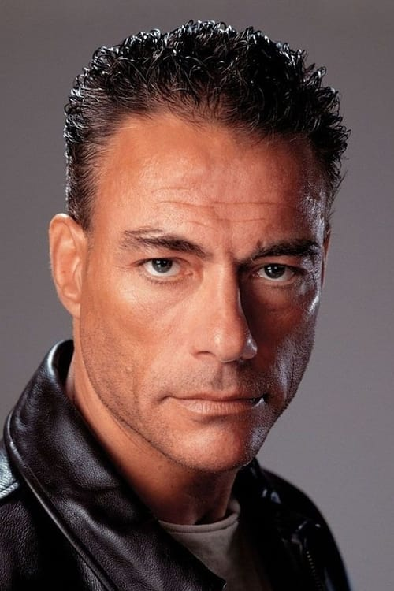
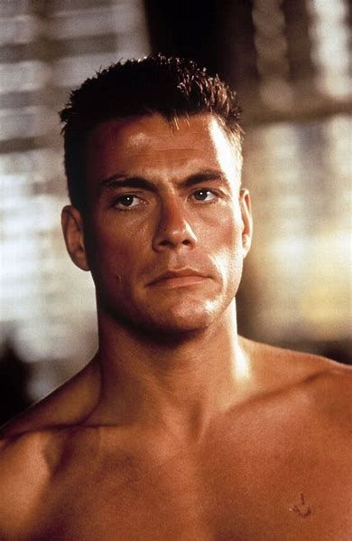

Basic info
Jean-Claude Camille François Van Varenberg (French: [ʒɑ̃ klod kamij fʁɑ̃swa vɑ̃ vaʁɑ̃bɛʁɡ], Flemish: [vɑɱ ˈvaːrə(m)bɛr(ə)x]; born 18 October 1960), known professionally as Jean-Claude Van Damme (French: [vɑ̃ dam], Flemish: [vɑn ˈdɑmə]), is a Belgian martial artist and actor. Born and raised in Brussels, his father enrolled him in a Shotokan karate school at the age of ten, which led Van Damme to hold the rank of 2nd-dan black belt in karate, and compete in several karate and kickboxing competitions. As a teenager, he won the middleweight championship of the European Professional Karate Association in 1979 and the Mr. Belgium bodybuilding title in 1978. With the desire of becoming an actor in Hollywood, he moved to the United States in 1982, where he worked on several films, until he got his break as the lead in the martial arts film Bloodsport (1988). He became a popular action film star and followed up with commercially successful films such as Cyborg, Kickboxer (both 1989), Lionheart, Death Warrant (both 1990), Double Impact (1991), Universal Soldier (1992), Nowhere to Run, Hard Target (both 1993), Timecop, Street Fighter (both 1994), Sudden Death (1995), The Quest, which marked his directorial debut, and Maximum Risk (both 1996). He achieved sex symbol status in the late 1980s and early 1990s. Between 1993 and 1998, three Hong Kong filmmakers collaborated with Van Damme for their debuts in Western cinema: John Woo, Tsui Hark, and Ringo Lam. After a decline in popularity in the late 1990s and early 2000s, he returned to prominence with the critically acclaimed crime drama JCVD (2008). His big return to the action genre was in The Expendables 2 (2012), in which he starred as the villain, opposite Sylvester Stallone's character. From thereon, he continued starring in action films and doing extensive voice work, appearing in the well-received Enemies Closer (2013), The Bouncer, Kickboxer: Retaliation (both 2018), Minions: The Rise of Gru (2022), and Darkness of Man (2024). In television, he starred in the Ridley Scott-produced Jean-Claude Van Johnson (2016-2017). In video games, he appeared as Johnny Cage in Mortal Kombat 1 and as Max Valliant in Hitman: World of Assassination. Regarded as an icon of action and martial arts cinema, his films have grossed over $1 billion worldwide, making him one of the most successful action stars of all time. Outside his film career, Van Damme has publicly supported various conservationist causes and animal rights organisations.
Early life and education
Van Damme was born Jean-Claude Camille François Van Varenberg, on 18 October 1960, in Berchem-Sainte-Agathe, Brussels, Belgium, the son of Eliana and Eugène Van Varenberg, who was an accountant and florist. His father is from Brussels and bilingual, and his mother is Flemish (Dutch-speaking). Van Damme was brought up Roman Catholic. His paternal grandmother was Jewish. He began martial arts at the age of ten, enrolled by his father in a Shōtōkan karate school. His styles consist of Shōtōkan Karate and Kickboxing. He eventually earned his black belt in karate at 18, and earned the rank of 2nd-dan black belt. He started lifting weights to improve his physique, which eventually led to a Mr. Belgium bodybuilding title in 1978.At the age of 16, he took up ballet, which he studied for five years. According to Van Damme, ballet "is an art, but it's also one of the most difficult sports. If you can survive a ballet workout, you can survive a workout in any other sport." Later he took up both Taekwondo and Muay Thai. Among his acting heroes growing up were Charles Bronson, Bruce Lee, James Dean, Montgomery Clift, Steve McQueen, Jean-Paul Belmondo, and Sylvester Stallone.